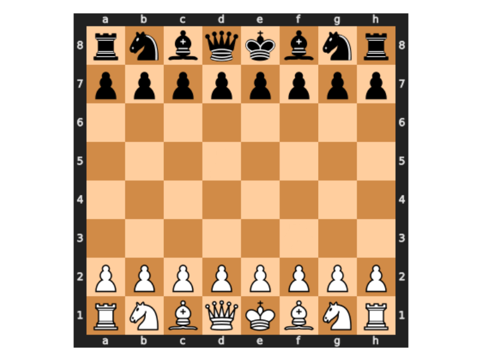

Overview
This package is designed to allow users to extract game data from popular online chess platforms. The platforms currently supported in this package include:
These websites offer a very convenient set of APIs to be able to access data and documentation to these can be found here for chess.com and here for Lichess.
Installation
You can install the CRAN version of chessR with:
install.packages("chessR")You can install the released version of chessR from GitHub with:
# install.packages("devtools")
devtools::install_github("JaseZiv/chessR")Usage
The functions available in this package are designed to enable the extraction of chess game data.
Data Extraction
The functions detailed below relate to extracting data from the chess gaming sites currently supported in this package.
Raw Game Data
The game extraction functions can take a vector of either single or multiple usernames. It will output a data frame with all the games played by that user.
The functions are below.
Note: These functions query an API, which is rate limited. The limiting rates for chess.com are unknown. For Lichess, the limit is throttled to 15 games per second. Queries could therefore take a few minutes if you’re querying a lot of games.
# function to extract chess.com game data
chessdotcom_game_data_all_months <- get_raw_chessdotcom(usernames = "JaseZiv")
chessdotcom_hikaru_recent <- get_raw_chessdotcom(usernames = "Hikaru", year_month = c(202104:202105))
# function to extract lichess game data
lichess_game_data <- get_raw_lichess("Georges")Analysis Data
The following function will extract the same data that the get_raw_chessdotcom() function will, however this function will also include additional columns to make analysing data easier.
The function can be used either on a single player, or a character vector of multiple players.
Note: This is only available for chess.com extracts
chess_analysis_single <- get_game_data("JaseZiv")
chess_analysis_multiple <- get_game_data(c("JaseZiv", "Smudgy1"))Leaderboards
The leaderboards of each game platform can be extracted for a number of different games available on each platform. Each are discussed below:
Chess.com
The below function allows the user to extract the top 50 players of each game type specified. Game types available include:
“daily”,“daily960”, “live_rapid”, “live_blitz”, “live_bullet”, “live_bughouse”, “live_blitz960”, “live_threecheck”, “live_crazyhouse”, “live_kingofthehill”, “lessons”, “tactics”
The usernames that are contained in the results can then be passed to get_raw_chessdotcom outlined above.
chessdotcom_leaders <- chessdotcom_leaderboard(game_type = "daily")Lichess
The lichess_leaderboard() function takes in two parameters; how many players you want returned (with a max of 200 being returned) and the speed variant. Speed variants include;
“ultraBullet”, “bullet”, “blitz”, “rapid”, “classical”, “chess960”, “crazyhouse”, “antichess”, “atomic”, “horde”, “kingOfTheHill”, “racingKings”, “threeCheck”
lichess_leaders <- lichess_leaderboard(top_n_players = 10, speed_variant = "blitz")Visualising games
With the additional {chess} package, you can visualise a game. For example, a recent Hikaru Nakamura vs Daniel Naroditsky game on chess.com:
# extract just one year-month of Hikaru's games from chess.com
hikaru <- chessR:::get_each_player_chessdotcom("hikaru", "202112")
# convert to {chess} 'game' format
m <- extract_moves_as_game(hikaru[11, ])
# plot each move and save all as a gif
# set sleep = 0 so the rendering doesn't happen in realtime
gifski::save_gif({
plot_moves(m, interactive = FALSE, sleep = 0)
},
gif_file = "~/Hikaru_Naroditsky.gif",
delay = 1)
For a detailed guide to using the package and the functions for analysis, see the package vignette
)